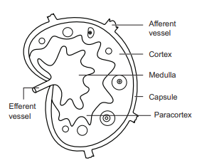
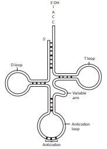
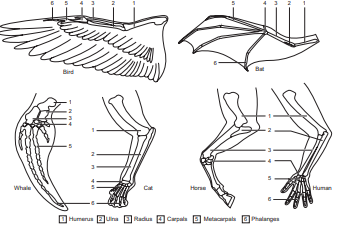
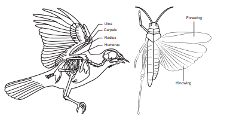
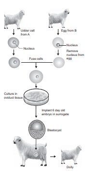
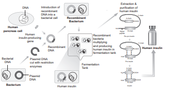
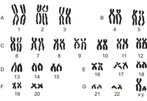
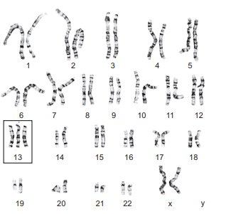
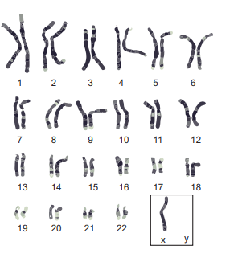

IDENTIFICATION
The given slide is identified as lymph node – Transverse Section.
COMMENTS
1. Lymph node is a small bean shaped structure found along the course of lymphatic duct.
2. Lymph node has three zones: cortex, paracortex and medulla.
3. The cortex contains B lymphocytes, macrophages and follicular dendritic cells.
4. The medulla consists of sparsely populated B-lymphocytes, which secrete antibody molecules.
5. The paracortex zone lies between the cortex and medulla and consists of richly populated T cells and dendritic cell.

B Picture
The given model is identified as t RNA (transfer RNA).
1. t RNA was formerly referred to as sRNA (soluble RNA)
2. It is a type of RNA and has a clover leaf structure.
3. It is a small RNA molecule, typically between 70 to 90 nucleotides in length.
4. It is an adapter molecule composed of RNA that serves as the physical link between the mRNA and the amino acid sequence of proteins.
5. It transports activated amino acids from the cellular amino acid pool to the site of protein synthesis.

The given picture is identified as homologous organs.
1. Structures which are similar in origin but perform different functions are called homologous structure. Example. Fore limbs of terrestrial vertebrates bird, bat, whale, horse, and human.
2. The forelimbs of these organisms perform different functions, and have similar anatomical structures such as humerus, radius, ulna, carpals, metacarpals and phalanges.
3. In these animals same structures develop along different directions due to adaptations to different needs. This is referred to as divergent evolution.

The given picture is identified as analogous organs.
1. Organism having different structural patterns but similar function is termed as analogous structure. Example Wings of bird and insects (Butterfly, dragon fly).
2. The structures of these animals are not anatomically similar though they perform similar functions.
3. The analogous structures are developed due to convergent evolution – different structures evolving for the same function.

The given picture is identified as cloning of animal – Dolly (Sheep)
1. Cloning is the process to produce genetically identical individuals of an organism either naturally or artificially.
2. Dolly was the first mammal (sheep) clone developed by Ian Wilmut and Campbell in 1997.
3. Dolly was cloned from a differentiated somatic cell taken from an adult animal without the process of fertilization.
4. In this process, the udder cells (somatic cells) of mammary gland from a donor sheep were isolated. An ovum (egg cell, germ cell) was taken from the ovary of another sheep and enucleated.
5. The udder cell and enucleated ovum were fused and implanted into a surrogate mother. Five months later, dolly was born.

The given picture is identified as the flow chart of Human Insulin Production.
1. Production of insulin by recombinant DNA technology started in the late 1970s.
2. This technique involved the insertion of human insulin gene on the plasmids of E coli.
3. The inserted gene synthesizes the polypeptide chains A and B segments linked by a third chain(C) as a precursor called Pre-Pro insulin.
4. The linking C chain is excised, leaving, A and B polypeptide chains.
5. Insulin was the first ever pharmaceutical product of rDNA technology, administered to humans.

The given photograph is identified as normal karyotype of human beings.
1. Karyotyping is a technique through which a complete set of chromosomes are separated from a cell and are arranged in pairs.
2. A diagrammatic representation of chromosomes is called an idiogram.
3. There are 22 pairs of autosomes and a pair of allosomes ( X X female, X Y male) arranged based on their size, shape, banding pattern and position of centromere.
4. It helps in gender identification and to detect genetic diseases.

The given photograph is identified as Patau’s Syndrome.
1. It is one of the autosomal aneuploids formed due to trisomic condition of chromosome 13.
2. It is caused by meiotic nondisjunction of chromosomes.
3. The symptoms are multiple and severe body malformation with profound mental deficiency.
4. The individuals have small head with small eyes, cleft palate and malformation of brain.

The given photograph is identified as Turner’s syndrome.
1. This genetic disorder is due to the loss of an X chromosome resulting in a karyotype of 44A plus XO equal to 45.
2. It is caused due to meiotic nondisjunction of allosomes.
3. These individuals are sterile female with short stature and webbed neck.
4. They also have under developed breasts and gonads with lack of menstrual cycle during puberty.
